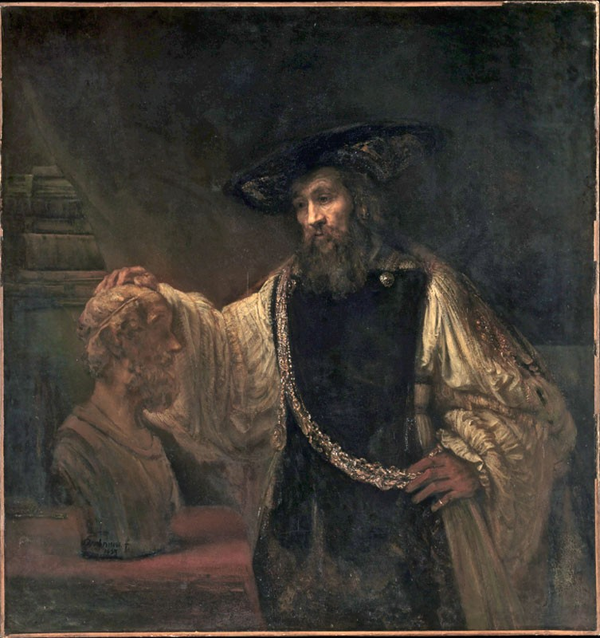
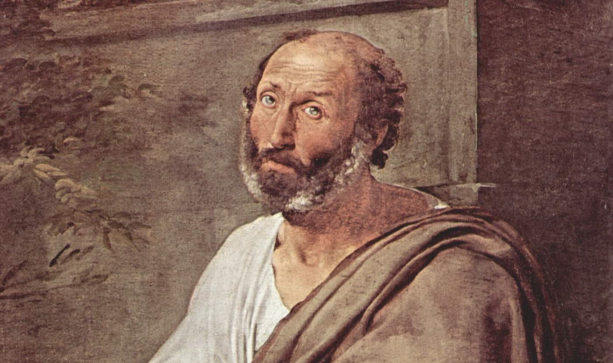
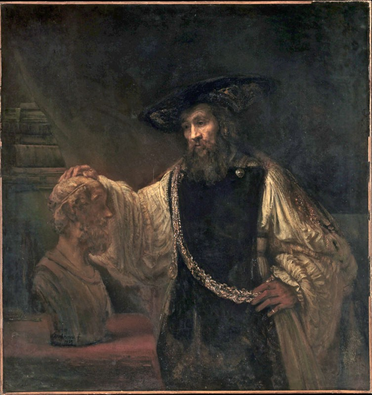
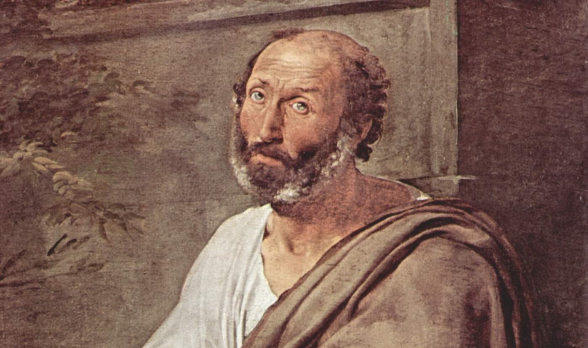

Aristotle
 



One Of the greatest minds that ever lived.
Aristotle, Greek Aristoteles, (born 384 bce, Stagira, Chalcidice, Greece—died 322, Chalcis, Euboea), ancient Greek
philosopher and scientist, one of the greatest intellectual figures of Western history. He was the author of a
philosophical and scientific system that became the framework and vehicle for both Christian Scholasticism and medieval
Islamic philosophy. Even after the intellectual revolutions of the Renaissance, the Reformation, and the Enlightenment,
Aristotelian concepts remained embedded in Western thinking.
Aristotle’s intellectual range was vast, covering most of the sciences and many of the arts, including biology, botany,
chemistry, ethics, history, logic, metaphysics, rhetoric, philosophy of mind, philosophy of science, physics, poetics,
political theory, psychology, and zoology. He was the founder of formal logic, devising for it a finished system that
for centuries was regarded as the sum of the discipline; and he pioneered the study of zoology, both observational and
theoretical, in which some of his work remained unsurpassed until the 19th century. But he is, of course, most
outstanding as a philosopher. His writings in ethics and political theory as well as in metaphysics and the philosophy
of science continue to be studied, and his work remains a powerful current in contemporary philosophical debate.
This article deals with Aristotle’s life and thought. For the later development of Aristotelian philosophy, see
Aristotelianism. For treatment of Aristotelianism in the full context of Western philosophy, see philosophy, Western.